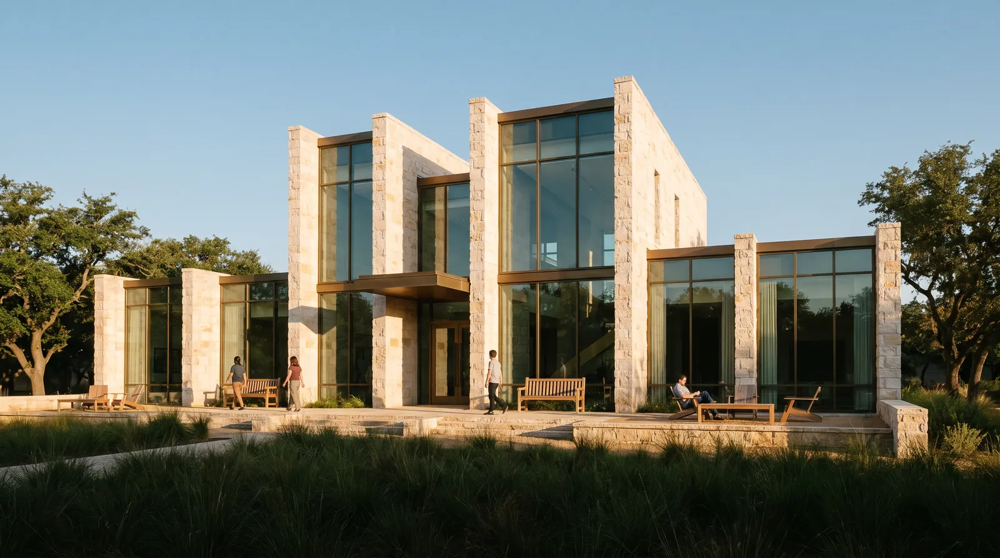

Engineering portfolio
Ritesh Mamidi —
AI Operations
& Applied AI.
I build and evaluate AI workflows that people can inspect, question and operate.

Engineering portfolio
I build and evaluate AI workflows that people can inspect, question and operate.
Selected work
Source code, case studies and the records behind the demonstrations.